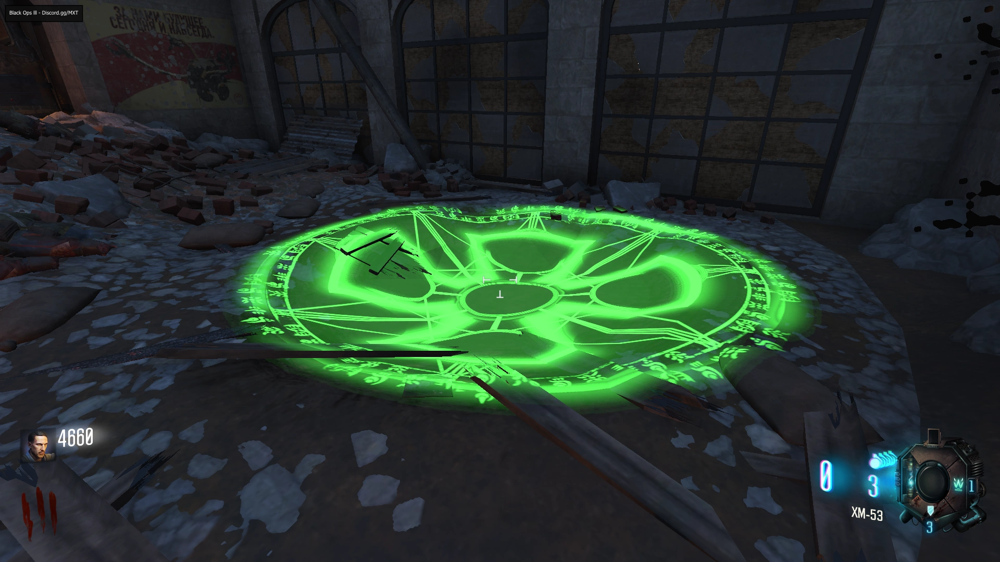

Dead Ended
Interact with 3 Vodka Bottles in the following locations:
Ace of Spades
Interact with 3 Ace of Spades Cards in the following locations:
Pack-a-Punch
Turn on the Power
Obtain a Cylinder for the following Groph Modules, Call them in, Defend them and they will open to Reveal a Part
Take them to Operations Bunker and put them into the Machine
Ride the Dragon to the Hatchery
Melee Weapons
Complete Round Milestones in a Specififed Time Limit
-Round 5 in Under 5 Minutes - Wrench
-Round 10 in Under 13 Minutes - Malice
-Round 15 in Under 24 Minutes - Fire Axe
-Round 20 in Under 32 Minutes - Fury's Song
After Completing each Milestone, a Melee Weapon Wallbuy will be Available in the Operations Bunker
Dragon Strikes
Turn on the Power
All Players must Activate the Terminal in the Hatchery, and Complete the Lockdown
Dragon Shield
Obtain the First Part of the Dragon Shield near the Infirmary in the following locations:

Obtain the Second Part of the Dragon Shield near the Operations Bunker in the following locations:
Obtain the Third Part of the Dragon Shield near the Armory in the following locations:
Upgrade
Get 50 kills with the Shield
Find 3 lines of Apothicon Symbols around the Map, and Shield Blast Them
-Dragon Control to the Left of the Platform
-On the Broken Roof in Supply Depot
-On the Giant Robot's Arm at Tank Station
Go to Spawn and Interact with the Dead Dragon to Upgrade your Shield
Gauntlet of Siegfried
Go to the Hatchery and Shoot the Dragon Egg above the Sewer System Exit

Locate a Nest around the Map and Place the Egg
Have a Dragon Breathe Fire on it and let it Cool for 1-2 rounds
Complete 3 tasks for the Dragon Egg in Order
-Napalm Kills
-Penetrating Multikills
-Melee Kills
Go to the Hatchery and Incubate your Egg in the Bunker by Placing them in the Incubator and Charge it by Killing Zombies Nearby
Let the Egg Cool for 1-2 rounds, Pick it up and then go back to Spawn and get the Gauntlet from your Challenges Gravestone
Special Equippables
Mangler Helmet
Effects
-50% Damage Reduction from Mangler's
-30% Damage to Mangler's
Kill several Mangler's, then Equip it in Department Store

Valkyrie Helmet
Effects
-50% Damage Reduction from Valkyries
-30% Damage to Valkyries
Shoot the Camera on several Valkyrie Drones
Dragon Wings
Effects
-30% Damage Reduction to Fire and Explosive Damage
-Free and Instant Hatchery Teleport
Riding the Dragon at all 3 Platforms and Obtaining the Gauntlet of Siegfried
Main Quest
Valve Step
Kill a Valkyrie Drone next to the Generator with a Green Tarp on it in the Hatchery to Activate it
Identify the Location of the Green Valve and the Valve with the Cylinder, then you can find the Correct Combination using this Tool
Green Light - The Starting Point
Pink Cylinder - The End Point
Valve Step Solver
Once you get the Cylinder, Place it in the Slot next to Sophia and then Enter the Password "KRONOS" by Shooting the Cylinder, then Interact with Sophia
Obtain all 6 Trophies, you can Obtain these in any Order
-Shoot the Trophy in the Statue's Hand Straight out of Dragon Command
-Use the Gigant Laser Beam in Supply Depot to reveal a Trophy Hidden in a Safe under the Floor
-Shield Blast the Pipe Under the Double Tap Room, a Trophy will Appear next to Double Tap
-Use the Dragon Strike on the Puddle below the Speed Cola

-When Exiting the Hatchery through the Sewers, look up and Shoot the Red Light, the Trophy will Appear in the Toilet in the Hatchery
-Obtain the Gauntlet and open the Safe in the Operations Bunker by 115 Punching it
Complete SOHPIA's Tasks, they are in a Random Order Every Game
Bomb Defusal
There are 6 Bombs on the Walls around the Map (Make Sure you Know where they are)
Each area will Flash in a Specific Order on the Screen,you have to Defuse the Bombs in Order within 1 Minute
If any of the Bombs are Defused in the wrong Order or it is not Completed in Time all Players outside of the Following Safe Areas will be Downed
-Spawn
-Downstairs in Dragon Control
-Hatchery
Valkyrie Escort
A Damaged Valkyrie Drone with no Arms and Green Eyes will Appear in Spawn, escort it to the Teleporter Pad in Dragon Control
If you go too Far Away or it Dies, you will Fail the Challenge and have to Retry Next Round
Mangler Escort
A Mangler with Green Eyes will Spawn in a Random Location, escort it to the Teleporter Pad in Dragon Control
If you go too Far Away or it Dies, you will Fail the Challenge and have to Retry Next Round
Gersch Module Protection
A Gersch Module will spawn Outside of the Map, it can be seen on the Map at Dragon Control
Defend it, no Zombies will Spawn Inside of the Map, once it is Completed, Release The Dragon from the Gauntlet which will Grab the Power Core, take it to Sophia
Capture Gersch
Gersch will Spawn as a Yellow Wisp somewhere around the Map (He Won't Spawn at Hatchery), find Him and Shoot Him 3 Times, then go to Sophia
Lockdown/Server
Go to the Hatchery, have all Players Interact with the Computer by the Toilet, which will Start the Download
Survive the Waves of Mangler's until the Download Completes
Go back to the Computer, take the Key Card and Insert it into Sophia
**PREPARE FOR THE BOSS FIGHT**
Grab the Power Core, go to Spawn and Release The Dragon from the Gauntlet which will take the Power Core to Nikolai
Return to Sophia and she will fly away, revealing a Sewer Gate which will you to the Boss Fight, All Players must Stand on it to Continue
Press the Button in the Center to Start the Dragon Boss Fight
You can only Damage the Dragon in the Glowing Orange Weak Spots
Periodically the Dragon will Breathe Fire on most of the Arena, Pull out your Shield to Block the Damage
Once you Kill the Dragon, Nikolai will Turn on You, so start Shooting the Glowing Orange Vents on his Mech
Nikolai will Attack you with Missiles, R.A.P.S, and Turrets
Once you Defeat Nikolai the Ending Cutscene will Play, you will be Teleported to Spawn Afterwards with all Perks